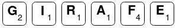

C18 Programmation dynamique ¶
Cours¶
Attention
Ce diaporama ne vous donne que quelques points de repères lors de vos révisions. Il devrait être complété par la relecture attentive de vos propres notes de cours et par une révision approfondie des exercices.
Travaux pratiques¶
Manipulations des dictionnaires¶
 Exercice 1 : Cr√©er et manipuler un dictionnaire¶
Exercice 1 : Cr√©er et manipuler un dictionnaire¶
- Créer un dictionnaire
conversiondont les clés sont les chiffres (de 0 à 9) et les valeurs leur écriture en lettre. Par exempleconversion[3] = "trois". - Ecrire une fonction
en_lettresPython qui prend en entrée un nombre entier et écrit en lettres chacun de ces chiffres par exempleen_lettre(421)affichequatre deux un.
Exercice 2 : De l'utilit√© des dictionnaires¶
Au jeu du Scrabble, chaque lettre a une valeur comme indiqué sur l'image ci-dessous :

Le but de l'exercice est d'écrire une fonction score qui prend un argument un mot et renvoie la somme des valeurs des lettres de ce mot. Par exemple valeur("GIRAFE") doit renvoyer 10 en effet :

et donc la valeur est \(2+1+1+1+4+1 = 10\)
-
Compléter une première version de
scorequi parcours les lettres du mots et ajoute la valeur suivant la lettre rencontrée. -
Les dictionnaires à la rescousse
-
Créer un dictionnaire
valeurdont les clés sont les lettres de l'alphabet et qui associe à chaque lettre sa valeur. -
Utiliser ce dictionnaire afin d'écrire une version bien plus courte et lisible de la fonction
score.
-
Exercice 3 : Minimum et maximum¶
Ecrire une fonction min_max qui prend en argument une liste non vide et renvoie un dictionnaire dont les clés sont "min" et "max". A la clé "min" est associée le minimum des valeurs de la liste et à la clé "max" leur maximum.
Exercice 4 : Moyennes des √©l√®ves¶
Voici un dictionnaire representant les notes obtenus par des élèves :
notes = {
"Albert" : [7, 11, 15, 8, 9],
"Alice" : [14, 11, 6, 15],
"Bob" : [9, 9, 13, 14, 9],
"Louise" : [11, 13, 12, 14, 14],
"Michelle" : [2, 5, 4, 9],
"Luc" : [18, 14, 18, 11]
}
-
Créer un dictionnaire possédant les mêmes clés (les prénoms) et contenant la moyenne de chaque élève.
Aide
On pourra commencer par créer une fonction auxiliaire
moyennequi renvoie la moyenne des valeurs présentes dans la liste donnée en argument. -
Trier ce dictionnaire par ordre croissant de moyenne.
Exercice 5 : Trouver la chaine qui se r√©p√®te¶
Vous pouvez télécharger ci-dessous un fichier chaines.txt :
chaines.txt
Ce fichier contient 5000 chaines de caractères (une par ligne), une seule de ces chaines apparait deux fois dans le fichier. Le but de l'exercice est de trouver laquelle
-
Proposer une solution utilisant une liste
deja_vudans laquelle on rangera les chaines de caractères au fur et à mesure de leur apparition. Vous pouvez tester votre réponse dans le formulaire ci dessous

Corrigé
#Lecture des chaines de caractères et stockage dans la liste "chaines" reader = open("chaines.txt") chaines = reader.read().strip().split('\n') reader.close() # Renvoie True si elt est dans liste (sinon False) def est_dans(elt,liste): for x in liste: if x==elt: return True return False # Trouve la première chaine en double deja_vu = [] for c in chaines: if est_dans(c,deja_vu): print(c) else: deja_vu.append(c) -
Proposer une solution utilisant les dictionnaire de Python
-
Discuter l'efficacité de ces deux solutions
Corrigé
Le test d'appartenance dans une liste a une complexité linéaire \(O(1)\) (on teste l'égalité ou plus entre
eltet chaque élément de la liste, donc au plus on effectuencomparaisons oùnest la longueur de la liste). Par contre, comme vu en cours, le test d'appartenance à un dictionnaire s'effectue en temps constant (\(O(1)\)). La seconde solution utilisant un dictionnaire est donc plus efficace.
Exercice 6 : A la recherche du mot cach√©¶
Vous pouvez télécharger ci-dessous un fichier mot_cache.txt :
mot_cache.txt
ce fichier contient de nombreux caractères : tous ceux de code ascii compris entre 33 (!) et 126 (~). Tous ces caractères apparaissent au moins à 50 reprises (et jusqu'à 100 fois) à l'exception de quelques uns qui apparaissent rarement (moins d'une dizaine de fois).
Retrouver les caractères qui apparaissent rarement, ranger les dans l'ordre de leur nombre d'apparition pour obtenir le mot caché. Vous pouvez vérifier votre résultat ci-dessous :
Aide
- Revoir si nécessaire comment ouvrir un fichier en Python et en lire le contenu.
- On pourra construire un dictionnaire dont les clés sont les caractères et les valeurs leur nombre d'apparition.
Hachage¶
Exercice 7 : Rappel du principe¶
- Ranger les entiers suivants : 176, 254, 1999, 2092, 565 dans une table de hachage de taille 9 avec la fonction de hachage \(h(k) = k \mod 9\).
- Donner un exemple de valeurs produisant une collision avec la valeur 176.
Exercice 8 : Un exemple de fonction hachage¶
- Ecrire une fonction
hash_strqui prend en entrée une chaine de caractères ascii et renvoie la somme des codes ascii des caractères de cette chaine modulo 100. - Donner un exemple de collision pour cette fonction de hachage.
Programmation dynamique¶
Exercice 9 : Coefficient du bin√¥me¶
On rappelle que dans le triangle de Pascal, le coefficient situé ligne \(n\) et colonne \(k\) noté \(\displaystyle{\binom{n}{k}}\) se déduit de ceux de la ligne précédente grâce à la relation de Pascal : \(\displaystyle{\binom{n}{k} = \binom{n-1}{k-1} + \binom{n-1}{k}}\). On veut écrire une fonction binom qui prend en argument deux entiers \(n\) et \(n\) et renvoie \(\displaystyle{\binom{n}{k}}\)
- Proposer une version récursive naïve de la fonction
binom - Calculer grâce à cette fonction \(\displaystyle{\binom{28}{12}}\) et noter le temps d'exécution
- Proposer une version avec mémoïsation de la fonction
binom, calculer de nouveau \(\displaystyle{\binom{28}{12}}\) et comparere avec le temps d'exécution obtenu à la question précédente
Exercice 10 : La mont√©e des marches¶
Pour gravir un escalier on peut faire des enjambées d'une ou deux marches. Par exemple pour monter un escalier de 4 marches, on pourrait faire 1+2+1 ou encore 2+2. On s'intéresse au nombre de façons de monter un escalier de \(n\) marches qu'on note \(f_n\).
-
Donner \(f_1\) et \(f_2\).
-
Etablir une relation de récurrence liant \(f_{n}\), \(f_{n-1}\) et \(f_{n-2}\) pour \(n \geq 2\).
Aide
on pourra différencier les cas où la dernière enjambée fait une ou deux marches.
-
En déduire une fonction
pythonrécursive permettant de répondre au problèmeAide
On donnera une fonction utilisant la mémoïsation
-
Proposer une version itérative permettant d'obtenir \(f_n\) par une approche de bas en haut.
-
On s'intéresse maintenant à la construction effective de toutes les possibilités et on notera \(p_n\) la liste des façons possibles de gravir un escalier de \(n\) marches. Les possibilités sont données sous forme de chaine de caractères composées de 1 et de 2. Par exemple, \(p_3\)=
["111","12","21"]et \(p_5\) contient la chaine"1121".- Donner \(p_0\) et \(p_1\).
- Etablir une relation de récurrence liant les éléments de \(p_{n}\) à ceux de \(p_{n-1}\) et \(p_{n-2}\)
- Ecrire une fonction python permettant de répondre au problème.
-
Dans le fichier
montees.txtà télécharger ci-dessous, se trouvent des façons de monter un escalier de 13 marches. Sur chaque ligne du fichier, une des possibilités est donnée sous la forme d'une chaine de caractères composée de 1 et de 2.
montees.txt- Vérifier (en comptant le nombre de lignes de ce fichier et en comparant avec la valeur de \(f_{13}\)) qu'une possibilité est manquante.
- Quelle est la possibilité manquante ?
Exercice 11 : Jamais deux cons√©cutifs !¶
Vous disposez d'un tableau de valeurs de \(n\) valeurs \([h_0,\dots,h_{n-1}]\), on doit sommer les valeurs présentes dans ce tableau mais sans jamais utiliser deux éléments consécutifs. Le but de l'exercice est d'écrire un programme permettant de trouver la somme maximale ainsi atteignable.
Par exemple si le tableau contient les valeurs \([7, 5, 3, 6]\) alors la somme maximale est atteinte en prenant \(7\) et \(6\) et vaut \(13\).
-
Résoudre ce problème en utilisant la programmation dynamique
Aide
On pourra noter \(S_i\) la somme maximale sans utiliser d'éléments consécutifs à partir de l'indice \(i\) et déterminer la relation de recurrence liant les \(S_i\) (\(0 \leq i  < n\))
-
Proposer une solution pour reconstruire la liste des valeurs utilisées dans la solution
Exercice 12 : Chemin de somme maximale dans une pyramide¶
On reprend l'exemple de la recherche de la somme maximale d'un chemin dans une pyramide (voir cours).
-
Ecrire la fonction
somme_maxqui prend en argument une pyramidep(sous la forme d'une liste de listes) ainsi que deux entiersietjet renvoie la somme maximal d'un chemin dans la sous pyramide de sommetp[i][j].Aide
On rappelle les équations de complexité (où
nest le nombre de niveau de la pyramide):somme_max(p,i,j) = p[i][j]sii=n-1(c'est le cas de base, on a atteint la base de la pyramide)somme_max(p,i,j) = p[i][j] + max(somme_max(p,i+1,j), somme_max(p,i+1,j+1))sinon
-
Vérifier que votre fonction renvoie bien 32 sur le petit exemple vu en cours :
[[5], [3, 4], [9, 2, 6], [4, 6, 8, 4], [3, 9, 2, 5, 7]] -
Sur des exemples de taille plus importantes, on doit mémoïser les résultats des sous pyramides afin de ne pas les recalculer. Le faire à l'aide d'un dictionnaire. Puis tester votre programme sur la pyramide ci-dessous :
Pyramide (à copier pour tester)
[ [5], [4, 4], [4, 7, 5], [3, 1, 7, 1], [8, 6, 5, 4, 6], [4, 6, 7, 3, 3, 3], [7, 8, 2, 5, 3, 8, 8], [7, 2, 6, 7, 7, 5, 6, 6], [9, 2, 1, 4, 9, 2, 9, 9, 2], [6, 7, 1, 7, 6, 4, 9, 1, 9, 8], [7, 7, 7, 7, 7, 4, 8, 9, 1, 1, 9], [1, 8, 2, 3, 2, 5, 1, 1, 2, 8, 8, 3], [7, 2, 3, 5, 7, 2, 8, 8, 7, 6, 8, 7, 4], [1, 8, 6, 4, 5, 3, 6, 1, 1, 8, 9, 5, 3, 8], [8, 7, 3, 9, 2, 3, 7, 5, 7, 5, 2, 2, 5, 2, 6], [1, 8, 2, 5, 2, 3, 9, 1, 1, 5, 5, 2, 6, 7, 6, 2], [8, 5, 5, 9, 4, 3, 4, 4, 8, 4, 7, 9, 2, 6, 6, 8, 2], [5, 3, 7, 2, 7, 8, 3, 9, 7, 4, 6, 7, 7, 4, 5, 6, 7, 3], [1, 3, 8, 9, 2, 7, 1, 8, 7, 8, 8, 2, 5, 7, 4, 9, 1, 8, 9], [8, 4, 4, 3, 3, 5, 3, 4, 6, 7, 7, 5, 4, 3, 4, 8, 2, 5, 2, 2], [7, 7, 8, 5, 9, 1, 7, 2, 3, 1, 3, 6, 5, 8, 5, 3, 5, 6, 5, 3, 1], [9, 7, 9, 3, 6, 9, 3, 1, 8, 5, 5, 1, 5, 1, 7, 4, 4, 5, 7, 1, 6, 8], [8, 7, 6, 4, 3, 1, 8, 2, 1, 1, 6, 1, 6, 5, 9, 3, 9, 6, 3, 4, 2, 6, 4], [5, 2, 1, 2, 4, 1, 8, 1, 6, 1, 4, 4, 6, 5, 5, 8, 7, 6, 6, 3, 4, 3, 3, 8] ]Vérifier votre réponse :
-
Ce problème est l'un du site du Project Euler, vous y trouverez donc des jeux de données de taille plus importantes pour tester votre programme : voir le problème 18 ainsi que le problème 67
Exercice 13 : Tranche de somme maximale dans un tableau¶
Etant donné un tableau d'entiers (positif ou négatif) \([e_0,\dots,e_{n-1}]\) on cherche dans ce tableau la tranche de plus grande somme. Par exemple pour le tableau \([-2, 7, 1, -3, 5, -8, -2, 9]\) c'est la tranche \([7, 1, -3, 5]\) qui a la plus grande somme et cette somme est 10. On n'autorise pas de tranche de longueur nulle et donc par exemple pour le tableau \([-5, -2, -7]\) c'est la tranche \([-2]\) qui a la plus grande somme.
-
Implémenter l'algorithme naïf qui calcule la somme de toutes les tranches possibles c'est-à-dire les \(\displaystyle{S_{ij} = \sum_{k=i}^{j} e_k}\) et donne ensuite le maximum. Quel est la complexité de cet algorithme ?
Aide
On pourra d'abord écrire la fonction
somme_tranchequi prend en argument deux entiers \(i\) et \(j\) et renvoie \(S_{ij}\) -
Proposer une version permettant de se ramener à un algorithme ayant une complexité quadratique.
Aide
On pourra par exemple calculer les \(S_{0i}\) pour \(0 \leq i \leq n-1\) et exprimer les \(S_{ij}\) à l'aide de ces sommes partielles.
-
Un algorithme très élégant et ayant une complexité en \(\mathcal{O}(n)\) pour ce problème a été proposé par Jay Kadane. L'algorithme consiste à parcourir le tableau en tenant à jour la valeur de \(T_j\) qui est la tranche de somme maximale qui se termine à l'index \(j\). La somme de la tranche maximale est alors obtenu en maintenant à jour une variable contenant le maximum des \(T_j\) au fur et à mesure de leurs calculs.
- Etablir la relation de récurrence liant \(T_{j+1}\) et \(T_{j}\)
- Implémenter et tester ce nouvel algorithme
- Proposer une version qui donne aussi les index de début et de fin de la tranche de somme maximale.
Exercice 14 : D√©coupe de valeur maximale¶
Le problème de la recherche de la découpe de valeur maximale d'une barre a été résolu en cours. On donne ci-dessous la fonction python récursive avec mémoïsation (dans le dictionnaire vmax) qui répond au problème :
Python
-
Faire fonctionner ce programme avec les données suivantes et donner la valeur de la découpe maximale.
Longueur 1 2 3 4 5 6 7 8 9 10 11 12 13 14 15 16 Prix 3 6 8 12 13 16 19 24 28 29 32 33 37 40 42 43 -
Utiliser le tableau
vmaxdes valeurs maximales des découpes déjà construit afin de déterminer une découpe maximale.Aide
On pourra remarquer que puisque
vmax[16] = vmax[7] + prix[9]cela signifie qu'une découpe maximale peut-être obtenue avec un morceau de taille 9 et la découpe maximale d'une barre de taille 7. En répétant ce processus de proche en proche on peut déterminer la taille des morceaux d'une découpe de valeur maximale. -
On peut aussi modifier la fonction
valeur_maxci-dessus afin qu'elle renvoie non pas la valeur de la découpe mais la découpe elle-même.
Exercice 15 : Probl√®me du sac √† dos¶
On dispose d’un sac à dos pouvant contenir un poids maximal \(P\) et de \(n\) objets ayant chacun un poids \((p_i)_{0\leq i \leq n-1}\) et une valeur \((v_i)_{0\leq i \leq n-1}\). On suppose dans la suite que les objets sont rangés par ordre croissant de poids. Le problème du sac à dos consiste à remplir ce sac en maximisant la valeur des objets qu’il contient.
-
Proposer un programme résolvant ce problème par un algorithme glouton.
Aide
On rappelle que cet algorithme consiste à :
- classer les objets par ordre d'importance (rapport poids/valeur, valeur, ...)
- remplir le sac en commençant par les objets de plus grande importance et en ajoutant l'objet tant que le poids maximal n'est pas atteint.
-
On considère les objets \(\{(3.5,25),(3,18),(2.5,14),(2,10)\}\) avec un sac de poids maximal de 5 :
- Donner le résultat de l'algorithme glouton (en utilisant le critère de classement de votre choix)
- Le résultat obtenu est-il optimal ?
-
On veut maintenant résoudre ce problème par programmation dynamique :
-
Etablir une relation de récurrence entre différentes instances du problème.
Aide
On pourra noter \(S(p,k)\) le poids maximal atteignable pour un sac de poids maximal \(p\) avec les objets \((p_i,v_i)_{0 \leq i \leq k}\) et chercher une relation de récurrence liant \(S(P,k)\) à d'autres instances du problèmes en distinguant deux cas :
- \(p_k \leq p\) et donc on peut (ou pas) prendre l'objet d'indice \(k\)
- \(p_k > p\) et donc l'objet d'indice \(k\) ne rentre pas dans le sac
-
En déduire une fonction Python permettant de déterminer la valeur maximale du sac.
- Déterminer un remplissage du sac réalisant la valeur maximale.
-
Tester votre programme sur les objets ci-dessous avec un poids maximal de 4 kg.

-
Exercice 16 : Distance d'√©dition¶
La distance d'édition (ou distance de Levenshtein) entre deux chaines de caractères \(M\) et \(N\) est le nombre de caractères qu'il faut supprimer, insérer ou remplacer pour passer d'une chaine à l'autre, on la note \(D(M,N)\).
Par exemple, la distance d'édition entre "TEST" et "VESTE" est de deux (une insertion et une substitution). On note \(l_m\) la longueur de \(M\) et \(l_n\) celle de \(M\), \(M_i\) les \(i\) (\(0 \leq i < l_M\)) premiers caractères de la chaine \(M\) et \(N_j\) les \(j\) (\(0 \leq j < l_N\)) premiers caractères de la chaine \(N\) et \(d(i,j) = D(M_i,N_j)\)
- Donner les cas de base suivantes : \(d(i,0)\) et \(d(0,j)\)
- Exprimer \(d(i,j)\) en fonction de \(d(i,j-1)\), \(d(i-1,j)\) et \(d(i-1,j-1)\), en distinguant le cas où le \(i\)ème caractère de \(M\) conïncide avec le \(j\)ième de \(N\) ou non.
- Coder une fonction Python permettant de répondre au problème
- A l'aide de la matrice \(d(i,j)\) (\(0 \leq i < l_M\), (\(0 \leq j < l_N\))) reconstruire les opérations permettant de passer de \(M\) à \(N\).